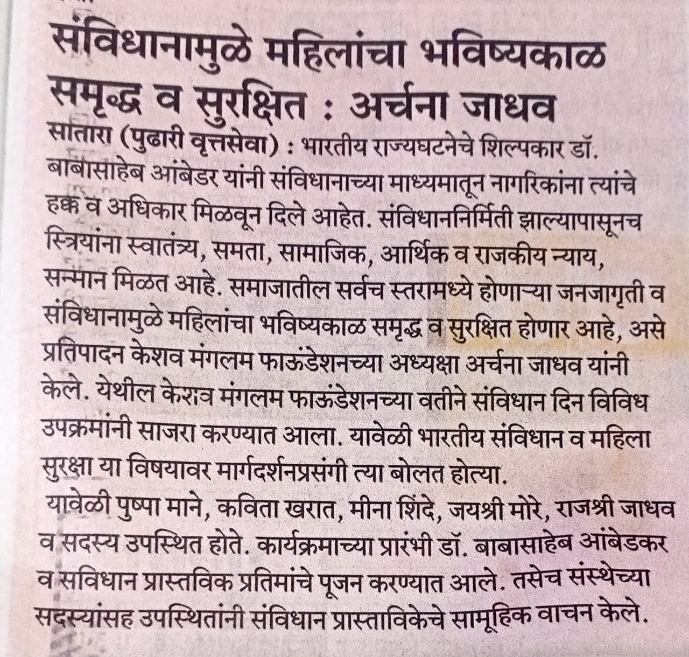
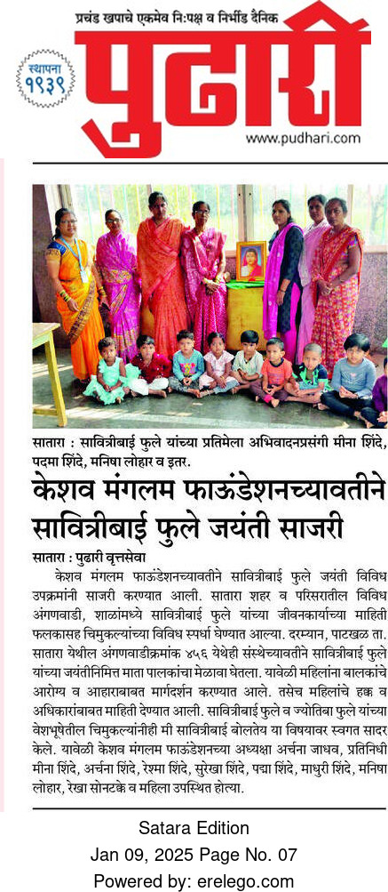

Keshav Mangalam Foundation (Estd. 14 October 2022) is a registered Non-Governmental Organisation operating in Satara district, Maharashtra.
We work at the grassroots level to empower poor, needy, and unemployed women, nourish children through access to nutrition and education, and support marginalized communities, including transgender persons, through inclusive growth.

Founder & Chairperson
A society where every woman — irrespective of caste, class, or economic background — lives with dignity, financial independence, and equal opportunity.
To empower women via skill-building and entrepreneurship, nourish children, and foster community participation with complete transparency.
Keshav Mangalam Foundation Center, Satara
Individual & group counseling sessions, Jan Sabhas, and active participation in Zilla Parishad governance and Jal Jeevan Mission drives.
Tailoring, financial literacy, micro-entrepreneurship, job-readiness, and digital skills workshops for Self-Help Groups (SHGs).
Field visits to rural & tribal pockets, improving access to healthcare, clean water, education, and sustainable livelihoods.
Vocational training, social acceptance workshops, and empowerment initiatives to help transgender individuals live freely with dignity.
Highlights of our grassroots interventions and local newspaper coverage across Satara district.

Published in Pudhari, Chairperson Archana Jadhav highlighted women's constitutional rights, safety, and economic equality during a special guidance session organized by the foundation.

Coverage of our Anganwadi drive in Satara (Pudhari Daily), featuring health guidance for mothers, child nutrition drives, and children's competitions in honor of Savitribai Phule.

Grassroots distribution of eco-friendly cloth bags and enterprise materials to women across Satara rural blocks to promote self-employment and sustainable living.

Hands-on group training sessions helping rural women plan business goals, micro-enterprises, and skill development routes using interactive charts and group dynamics.

Direct doorstep outreach and informal Jan Sabhas in remote households to understand individual needs, health concerns, and self-help group formation opportunities.
We are fully compliant with Indian statutory requirements for NGOs and eligible for corporate CSR funds.
Reg No: MH/1V723/SA
PAN: AAKAK8777D
Tax exemption for organisation income
50% tax deduction for donors
Reg No: CSR00087418 (MCA)
Unique ID: MH/2023/0342470
Expanding outreach from 700 to 1,500+ rural women across remote Satara blocks.
Expanding professional baking, cake decoration, & FSSAI compliance for food processing. Upgrading tailoring to boutique management & corporate garment job-work tie-ups.
Establishing block-level raw material hubs and Common Facility Centres (CFCs) with commercial ovens and cutting tools to eliminate capital barriers for women.
Listing products on Amazon, Flipkart, & GeM under a unified Satara rural brand identity, paired with B2B contracts with local supermarkets and hotels.
Organizing certified women into Joint Liability Groups (JLGs), facilitating low-interest Pradhan Mantri Mudra Yojana loans, and offering cash-flow mentorship.
We invite corporate partners to implement impactful, verifiable CSR initiatives under Schedule VII of the Companies Act, 2013: